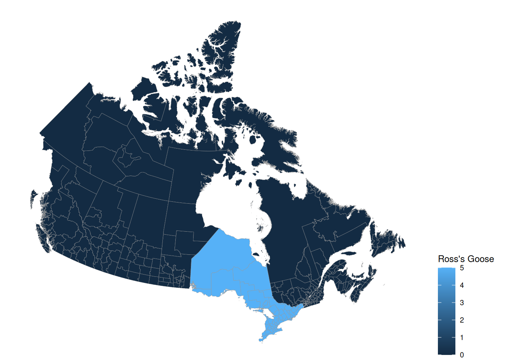

## write your answer here
knitr::opts_knit$set(root.dir = "/home/stabby/stat-240/RWorkspace/stat240/labs/lab_05")
library(tidyverse)── Attaching core tidyverse packages ──────────────────────── tidyverse 2.0.0 ──
✔ dplyr 1.1.4 ✔ readr 2.1.6
✔ forcats 1.0.1 ✔ stringr 1.6.0
✔ ggplot2 4.0.1 ✔ tibble 3.3.1
✔ lubridate 1.9.4 ✔ tidyr 1.3.2
✔ purrr 1.2.1
── Conflicts ────────────────────────────────────────── tidyverse_conflicts() ──
✖ dplyr::filter() masks stats::filter()
✖ dplyr::lag() masks stats::lag()
ℹ Use the conflicted package (<http://conflicted.r-lib.org/>) to force all conflicts to become errorsebird <- read.csv("ebird30.csv")
names <- read.csv("names.csv")
source("canada.R")Loading required package: viridisLite
Linking to GEOS 3.12.1, GDAL 3.8.4, PROJ 9.4.0; sf_use_s2() is TRUE
Registered S3 method overwritten by 'geojsonsf':
method from
print.geojson geojson
Attaching package: 'geojsonio'
The following object is masked from 'package:base':
prettyone_region <- which(apply(ebird[, 2:14], 1 , function(x) sum(x > 0 )) == 1)
ebird[one_region[1], ] Code CA.AB CA.BC CA.MB CA.NB CA.NL CA.NT CA.NS CA.NU CA.ON CA.PE CA.QC
7 rosgoo 0 0 0 0 0 0 0 0 5 0 0
CA.SK CA.YT
7 0 0ebird[one_region[2], ] Code CA.AB CA.BC CA.MB CA.NB CA.NL CA.NT CA.NS CA.NU CA.ON CA.PE CA.QC
9 gragoo 0 0 0 0 0 0 0 0 4 0 0
CA.SK CA.YT
9 0 0one_name <- names[one_region[1], ]
comm_name <- one_name$Common.Name
heat <- list()
for(i in 1:13 ){
heat[[colnames(ebird)[i+1]]] = ebird[one_region[1], colnames(ebird)[i+1]]
}
canada(title = comm_name, heat = heat)Loading required package: gridWarning: The `size` argument of `element_rect()` is deprecated as of ggplot2 3.4.0.
ℹ Please use the `linewidth` argument instead.